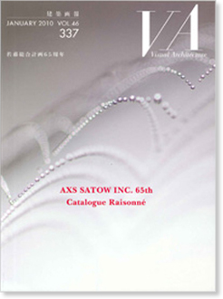

|

|
JANUARY 2010 VOL.46 337
佐藤総合計画65周年
AXS SATOW INC. 65th Catalogue Raisonne
|
|
定価 3,300円（税込）
ISBN 978-4-901772-49-5
|
|
| 個性のEvidence －不確実性と多様性から見えてくるもの－ |
…… 細田雅春 |
|
|
|
天津オリンピックセンタースタジアム |
…… 鉾岩 崇 |
|
岡崎市図書館交流プラザ りぶら |
…… 鳴海雅人 |
|
千葉市立千葉高等学校 |
…… 早川謙二 |
|
天津オリンピックセンタースタジアム |
…… 鉾岩 崇 |
|
杉並公会堂 |
…… 境 静也 |
|
小野市うるおい交流館「エクラ」 |
…… 渡辺 猛 |
|
独立行政法人労働者健康福祉機構 和歌山労災病院 |
…… 仲谷茂樹 |
|
淑徳大学看護学部 |
…… 永井豊彦 |
|
九段第3合同庁舎・千代田区役所本庁舎 |
…… 関野宏行 |
|
流山市立小山小学校 PFI |
…… 八木真爾 |
|
岩国市庁舎 |
…… 吉田俊文 |
|
美原複合シビック施設 |
…… 笠井隆司 |
|
金沢大学医学部附属病院 |
…… 岡田世郎 |
|
星野哲郎記念館 |
…… 井下仁史 |
|
ルミエール府中（府中市市民会館・中央図書館 複合施設） |
…… 鳴海雅人 |
|
ループしおのえ 健康増進温浴施設 |
…… 渡辺 猛 |
|
東北工業大学八木山キャンパス1号館 |
…… 野津 弘 |
|
山梨県立あけぼの医療福祉センター |
…… 室殿一哉 |
|
日本大学商学部砧キャンパス |
…… 境 静也 |
|
横須賀市うわまち病院南館 |
…… 國廣禎男 |
|
早稲田大学大隈講堂（保存・再生） |
…… 関野宏行 |
|
クイーポ本社ビル |
…… 八木真爾 |
|
金町六丁目地区第一種市街地再開発事業「ヴィナシス金町」 |
…… 笛吹清志 |
|
グランアベニューSAKAE |
…… 元松経男 |
|
南島原市立原城図書館 |
…… 上田俊三 |
|
焼津市立東益津小学校＋公民館 |
…… 横田三二 |
|
独立行政法人労働者健康福祉機構 関東労災病院 |
…… 高橋 明 |
|
智辯学園奈良カレッジ 小学部・中学部・高等部 |
…… 吉田諭司 |
|
大分市医師会立アルメイダ病院 増改築 |
…… 仲谷茂樹 |
|
石巻市牡鹿交流センター ほっとまる |
…… 西村裕之 |
|
社会福祉法人淑徳福祉会「淑徳共生苑」 |
…… 室殿一哉 |
|
瀋陽オリンピック・スポーツセンター・スタジアム |
…… 進藤憲治 |
|
東京大学（本郷）赤門総合研究棟 耐震改修 |
…… 油谷郁夫 |
|
北区立中央図書館 |
…… 漆原宣広 |
|
深セン湾体育センター |
…… 桑原賢司 |
|
東京富士美術館新館 増築 |
…… 本間秀明 |
|
|
|
|
“見える化”ツール |
…… 志賀一鑑 |
|
“癒し”と“学び” |
…… 森 正夫 |
|
われら地球号と仲良く… |
…… 土岐達美 |
|
光のリズム |
…… 仲家幸雄 |
|
プロジェクトマップ |
|
|
|
|
| マネージメントから考える |
|
|
主役の“熱い思いの人々”と |
…… 小宮 朗 |
|
多様性から新たな風土を読み解く―時代を見据え、柔軟に対応できる設計力の構築 |
…… 西村明男 |
|
形・光・緑・流れ・空気そして気配 |
…… 川田一栄 |
|
“安定と充実”そして“継承”へ |
…… 西村明男 |
|
人、自然、歴史の声を聞く |
…… 嶋田秀雄 |
|
開発事業の中での設計 |
…… 江口 潔 |
| RECENT WORKS |
|
| 建築概要 |
|
| 現代の名匠⑩ 阪田誠造 聞き手：鈴木博之 |
| VA Information |
|